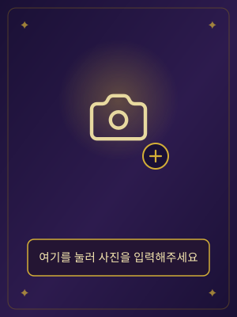

불러오는 중입니다...
"대한민국 재벌들과 나의 관상은 얼마 비슷할까요?"
✦ 포브스(Forbes) 선정 2026 대한민국 부자 순위 기반 ✦
가장 닮은 재벌을 찾아 초년·재물·말년운까지 읽어주는 나만의 관상 카드를 받아보세요.

공개된 데이터로 선별했습니다
사진은 서버 전송 없이 기기에서만 분석됩니다.
나는 어떤 재벌 관상일까? AI로 무료 확인
saramjh.github.io/richChecker
먼 곳의 재벌들과 관상을 비교하는 중입니다...